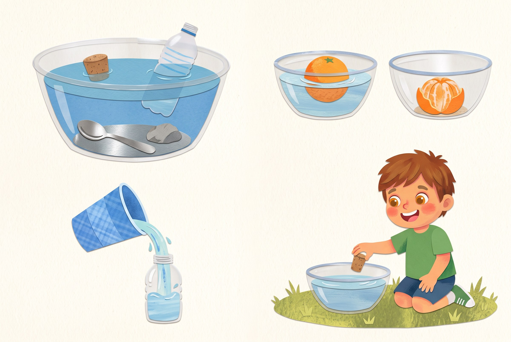
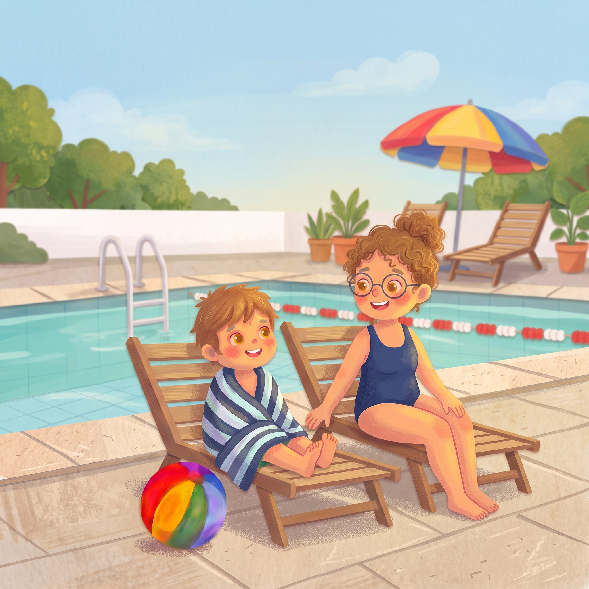

Necesitás: una palangana con agua, una naranja, una botella de plástico chica vacía con tapa, un corcho, una cuchara de metal, una piedrita y un vaso.

| Qué pongo en el agua | Yo creo que… | Lo que pasó: ¿flota o se hunde? |
|---|---|---|
| Naranja con cáscara | ||
| Naranja pelada | ||
| Botella vacía con tapa | ||
| Corcho | ||
| Cuchara de metal | ||
| Piedrita |
En el desafío, anotá cuántos vasos entraron.

El concepto. Que algo flote o se hunda no depende de si es grande o chico, ni solo de si es liviano: depende de cuánto pesa para su tamaño, comparado con el agua. Las cosas que tienen mucho aire adentro (una pelota inflada, un corcho, la cáscara de la naranja) pesan poco para el lugar que ocupan, y el agua las sostiene. Por eso un tronco enorme flota y una moneda chiquita se hunde. Con los pulmones llenos de aire, nuestro cuerpo flota mejor.
Lleno, vacío y volumen. Lleno, vacío y "por la mitad" son las primeras ideas de volumen: cuánto lugar hay adentro de algo. Contar cuántos vasos entran en un balde es medir ese lugar.
El hito. Muchos chicos empiezan a flotar con ayuda, patear con una tabla y meter la cara en el agua entre los 4 y los 5 años, más o menos, sobre todo si tienen clases. Nadar solos llega más tarde. Cada chico tiene su ritmo; ante cualquier duda, lo mejor es consultar al pediatra.
Seguridad. Un adulto siempre dentro del agua y a un brazo de distancia, aunque el chico sepa flotar o use flotadores: los flotadores no reemplazan a un adulto. Nada de correr por el borde. Las piletas de la casa, con cerco y puerta con traba. Y en el experimento, solo una palangana: un chico pequeño puede ahogarse en muy poca agua.
Para charlar después de leer: ¿Qué cosas de la bañadera flotan? ¿Cuáles se hunden? ¿Por qué Rula flota, si es tan grande? Si llenás un vaso hasta la mitad, ¿cuántos vasos por la mitad hacen uno lleno?